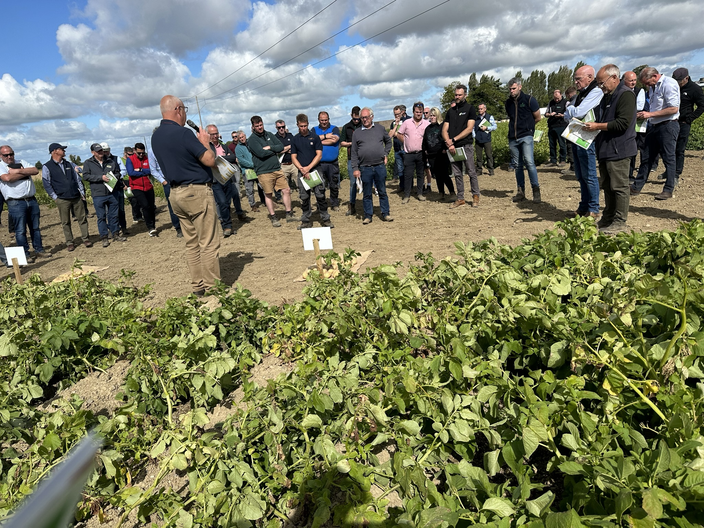
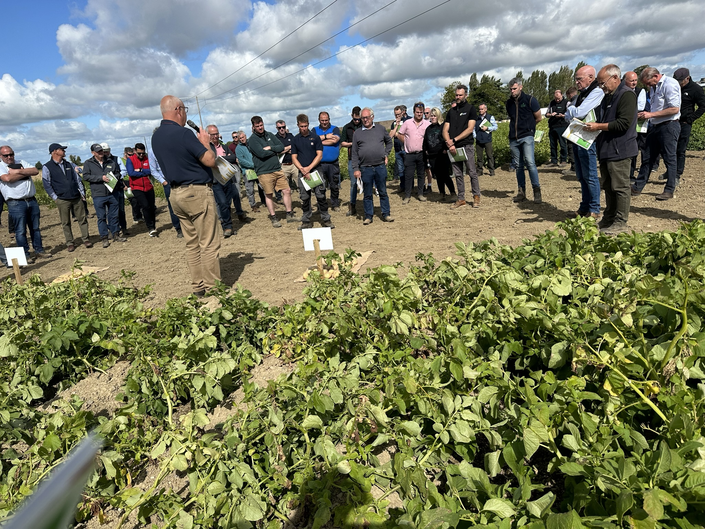

In collaboration with the potato processing industry, plant breeders across Europe and growers we are conducting varietal field trials to identify new varieties to meet the environmental, economic and sustainable needs of growers and processors.
 

Annual Open Day where growers, breeders and processers meet and view field plots and discuss
results.
Over the years, our dedicated growers have encountered evolving challenges, including rising production costs, heightened restrictions on fertilizer usage, and the continuous reduction of available chemical options in potato cultivation. The imperative for varieties with a minimal carbon footprint is particularly pronounced in the potato sector, where the landscape is becoming increasingly demanding annually.
In response to these challenges, we made a strategic decision to seek out and develop new potato varieties that not only excel under these criteria but also align with the specific requirements of Crisping Processors and Fresh Chip needs. To ensure the suitability of the varieties at different stages in storage and throughout the calendar year, we actively engaged Crisping Processors in the evaluation process.
In 2021, we proactively reached out to various potato breeders across Europe to identify new potato varieties that are well-suited to Irish growing conditions. Our criteria included performance with reduced fertilizer inputs, adaptability to the changing landscape of plant protection products, and the ability to meet processing specifications from field to store, ensuring excellent cooking quality through July of the following year.
In 2022, we executed our comprehensive plan by planting 28 distinct crisping varieties in 4m x 50m plots, adhering to current farming restrictions. Prior to harvesting, an annual open day event is organized in August, where we extend invitations to all Irish potato growers to observe the growing plots. This event serves as a platform for engaging with representatives from various potato breeders, facilitating discussions on a range of topics related to their varieties, spanning from growing conditions to harvesting and storage attributes.
Following the harvest, the potatoes are carefully stored in commercial facilities, ensuring the preservation of their quality. This meticulous process allows us to deliver not only on our commitment to sustainability but also to provide the industry with high-performing, environmentally conscious potato varieties tailored to the unique demands of Irish growing conditions.

At harvest, we meticulously measured various parameters for all the varieties, including yields, dry matters, tuber counts, sizes, and noted any defects. Additionally, we measured reducing sugars, a critical factor in processing. Defects and sugars were monitored each month from October until the end of June the following year. Our findings from the trials conducted in 2022 have been compiled into a comprehensive report for the benefit of growers and the processing sector. We plan to repeat this process in the current year.
The trial initiative for 2023 has been expanded to include 27 crisp varieties, with the notable addition of Chipping Varieties. For crisping, we meticulously screened and selected varieties based on our trial criteria for 2023, incorporating new ones based on breeder recommendations and stringent variety specifications. Furthermore, we have chosen 20 Chip varieties, following thorough research, breeder recommendations, and discussions with the chipping industry. These varieties are anticipated to thrive under Irish conditions, store effectively, and meet the specifications and cooking quality expected by the industry from field to the end of June out of storage.
Through our trials program, we are dedicated to supporting Irish potato growers in navigating the ever-changing environment, enabling them to grow sustainably and profitably into the future. Our goal is to provide the correct specifications and quality consistently throughout the year, meeting the expectations of the processing industry. Historically, a significant portion of the fresh chip industry has relied on supplies from the UK. The industry cites the lack of potato quality and the unreliability of supply as primary reasons for this reliance.